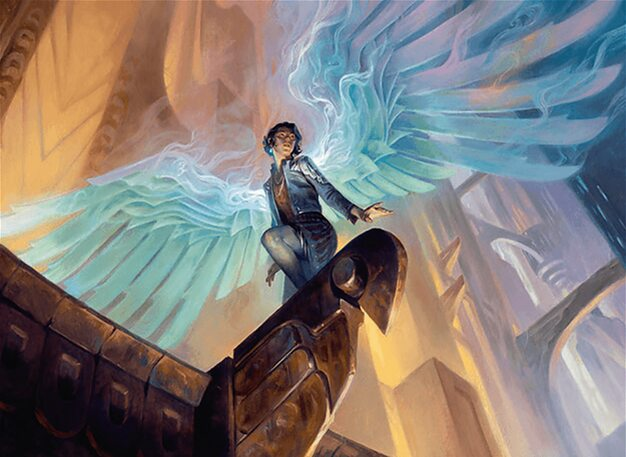
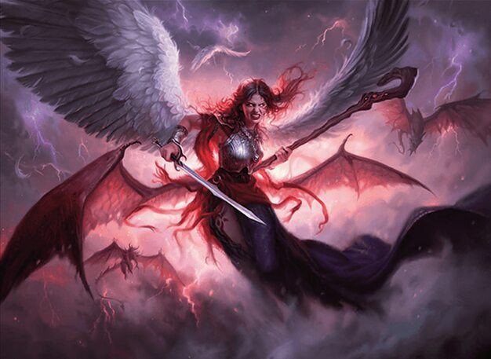
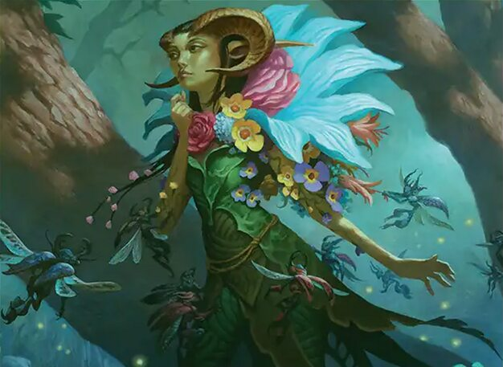

Rankings up to €400
The most successful decks up to €400 in the Forge simulation (Bracket 3: at most 3 Game Changers).
 Illustration: Eric Deschamps · © Wizards of the Coast
Illustration: Eric Deschamps · © Wizards of the CoastOloro, Ageless Ascetic
 Illustration: Valera Lutfullina · © Wizards of the Coast
Illustration: Valera Lutfullina · © Wizards of the CoastUreni of the Unwritten
 Illustration: Mark Winters · © Wizards of the Coast
Illustration: Mark Winters · © Wizards of the CoastNekusar, the Mindrazer
Rankings up to €400
from 26 tournaments
 Valgavoth, Harrower of SoulsElo 1670
Valgavoth, Harrower of SoulsElo 1670 Kuja, Genome Sorcerer // Trance Kuja, Fate DefiedElo 1667
Kuja, Genome Sorcerer // Trance Kuja, Fate DefiedElo 1667 Edgar MarkovElo 1655
Edgar MarkovElo 1655 Pantlaza, Sun-FavoredElo 1654
Pantlaza, Sun-FavoredElo 1654
Giada, Font of HopeElo 1653 Ygra, Eater of AllElo 1651
Ygra, Eater of AllElo 1651 Hakbal of the Surging SoulElo 1638
Hakbal of the Surging SoulElo 1638
Kaalia of the VastElo 1631 Zhulodok, Void GorgerElo 1631
Zhulodok, Void GorgerElo 1631 The Ur-DragonElo 1626
The Ur-DragonElo 1626 Ulalek, Fused AtrocityElo 1620
Ulalek, Fused AtrocityElo 1620 Miirym, Sentinel WyrmElo 1604
Miirym, Sentinel WyrmElo 1604 The Wise MothmanElo 1595
The Wise MothmanElo 1595 Meren of Clan Nel TothElo 1589
Meren of Clan Nel TothElo 1589 Arcades, the StrategistElo 1581
Arcades, the StrategistElo 1581 Lathril, Blade of the ElvesElo 1578
Lathril, Blade of the ElvesElo 1578 Teysa KarlovElo 1570
Teysa KarlovElo 1570 Bello, Bard of the BramblesElo 1548
Bello, Bard of the BramblesElo 1548 Terra, Herald of HopeElo 1542
Terra, Herald of HopeElo 1542 Zurgo StormrenderElo 1538
Zurgo StormrenderElo 1538 Hearthhull, the WorldseedElo 1535
Hearthhull, the WorldseedElo 1535 Jodah, the UnifierElo 1524
Jodah, the UnifierElo 1524 Rin and Seri, InseparableElo 1517
Rin and Seri, InseparableElo 1517 Ashling, the LimitlessElo 1506
Ashling, the LimitlessElo 1506 Vivi OrnitierElo 1504
Vivi OrnitierElo 1504 Caesar, Legion's EmperorElo 1484
Caesar, Legion's EmperorElo 1484 Baylen, the HaymakerElo 1477
Baylen, the HaymakerElo 1477 Teval, the Balanced ScaleElo 1466
Teval, the Balanced ScaleElo 1466 Isshin, Two Heavens as OneElo 1465
Isshin, Two Heavens as OneElo 1465 Chatterfang, Squirrel GeneralElo 1461
Chatterfang, Squirrel GeneralElo 1461 Aragorn, the UniterElo 1460
Aragorn, the UniterElo 1460 Animar, Soul of ElementsElo 1456
Animar, Soul of ElementsElo 1456 Felothar the SteadfastElo 1456
Felothar the SteadfastElo 1456 The Wandering MinstrelElo 1447
The Wandering MinstrelElo 1447 Cloud, Ex-SOLDIERElo 1432
Cloud, Ex-SOLDIERElo 1432 Krenko, Mob BossElo 1426
Krenko, Mob BossElo 1426 Korvold, Fae-Cursed KingElo 1411
Korvold, Fae-Cursed KingElo 1411 Yuriko, the Tiger's ShadowElo 1410
Yuriko, the Tiger's ShadowElo 1410 Muldrotha, the GravetideElo 1406
Muldrotha, the GravetideElo 1406 Ms. BumbleflowerElo 1395
Ms. BumbleflowerElo 1395 Tidus, Yuna's GuardianElo 1384
Tidus, Yuna's GuardianElo 1384 Sauron, the Dark LordElo 1381
Sauron, the Dark LordElo 1381 Frodo, Adventurous Hobbit // Sam, Loyal AttendantElo 1379
Frodo, Adventurous Hobbit // Sam, Loyal AttendantElo 1379 Esika, God of the Tree // The Prismatic BridgeElo 1377
Esika, God of the Tree // The Prismatic BridgeElo 1377 Wilhelt, the RotcleaverElo 1376
Wilhelt, the RotcleaverElo 1376 Kefka, Court Mage // Kefka, Ruler of RuinElo 1374
Kefka, Court Mage // Kefka, Ruler of RuinElo 1374 Kenrith, the Returned KingElo 1358
Kenrith, the Returned KingElo 1358
Maralen, Fae AscendantElo 1354 The NecrobloomElo 1344
The NecrobloomElo 1344 Kinnan, Bonder ProdigyElo 1340
Kinnan, Bonder ProdigyElo 1340 Mr. House, President and CEOElo 1337
Mr. House, President and CEOElo 1337 Breya, Etherium ShaperElo 1306
Breya, Etherium ShaperElo 1306How to read the numbers
Tier S–D: how strong the deck is compared with the others in this budget – S is the top 10%, A to 30%, B the midfield, C to 90%, D the rest.
Win rate: how many games the deck won. Four players sit at the table – 25% is normal. Green = better, red = worse.
Trend: ▲ rising, ▼ falling since the last tournament.
Sorted by Elo like in chess: wins against strong opponents count more. Elo, form and games are on every deck page.
| # | Commander | Tier | Win rate | Trend | Price |
|---|---|---|---|---|---|
| 1 | | S | 56.2% | ▲ | €387.53 |
| 2 | | S | 43.4% | ▲ | €389.26 |
| 3 | Nekusar, the Mindrazer ⚠ 7AI note: the Forge AI can't play 7 cards and plays 7 only partially – result somewhat less meaningful. Forge can’t play (replaced in the test)
€382.91 | S | 37.3% | ▼ | €382.91 |
| 4 |  | S | 32.7% | ▼ | €398.74 |
| 5 | ControlSpellslingerLifegain | S | 34.5% | ▼ | €398.21 |
| 6 | AristocratsSacrificeCombo | S | 32.3% | ▼ | €397.42 |
| 7 | | A | 36.5% | ▲ | €396.12 |
| 8 | BurnSpellslingerWizards | A | 33.3% | ▲ | €396.11 |
| 9 | | A | 33.9% | ▼ | €397.89 |
| 10 | | A | 32% | ▲ | €395.74 |
| 11 | AngelsLifegain+1/+1 Counters | A | 36% | ▼ | €393.35 |
| 12 | | A | 27.8% | ▲ | €387.01 |
| 13 | | A | 27.7% | ▼ | €347.72 |
| 14 | AngelsAggroDemons | A | 31.2% | ▼ | €393.42 |
| 15 | Zhulodok, Void Gorger ⚠ 5AI note: the Forge AI can't play 5 cards and plays 14 only partially – result much less meaningful. Forge can’t play (replaced in the test)
€399.99 | A | 29.1% | ▲ | €399.99 |
| 16 | | A | 30.9% | ▼ | €399.18 |
| 17 | | A | 28.8% | ▲ | €398.55 |
| 18 | | A | 28.4% | ▼ | €398.42 |
| 19 | | A | 27.7% | ▼ | €385.83 |
| 20 | Meren of Clan Nel Toth ⚠ 6AI note: the Forge AI can't play 6 cards and plays 5 only partially – result somewhat less meaningful. Forge can’t play (replaced in the test)
€383.70 | A | 22.9% | ▲ | €383.70 |
| 21 | | B | 28% | ▲ | €372.97 |
| 22 | | B | 27.9% | ▼ | €396.18 |
| 23 | | B | 25.9% | ▲ | €387.15 |
| 24 | | B | 26.6% | ▼ | €374.00 |
| 25 | | B | 40% | ▲ | €320.87 |
| 26 | | B | 22.8% | ▲ | €392.22 |
| 27 | | B | 24.9% | ▲ | €231.84 |
| 28 | | B | 25.1% | ▼ | €397.23 |
| 29 | | B | 21.8% | ▲ | €397.24 |
| 30 | | B | 26% | ▲ | €394.57 |
| 31 | Vivi Ornitier ⚠ 11AI note: the Forge AI can't play 11 cards and plays 5 only partially – result much less meaningful. Forge can’t play (replaced in the test)
€391.09 | B | 22.6% | ▼ | €391.09 |
| 32 | | B | 23.5% | ▼ | €398.24 |
| 33 | | B | 24% | ▲ | €393.72 |
| 34 | Teval, the Balanced Scale ⚠ 6AI note: the Forge AI can't play 6 cards and plays 5 only partially – result somewhat less meaningful. Forge can’t play (replaced in the test)
€391.83 | B | 23.6% | ▼ | €391.83 |
| 35 | | B | 22.5% | ▼ | €395.44 |
| 36 | TokensAristocratsSquirrels | B | 23% | ▼ | €397.84 |
| 37 | | B | 21.9% | ▼ | €392.84 |
| 38 | | B | 23.6% | ▲ | €397.47 |
| 39 | | B | 20.6% | ▲ | €205.72 |
| 40 | | B | 27.1% | ▲ | €394.56 |
| 41 | | B | 25.1% | ▲ | €366.07 |
| 42 | Krenko, Mob Boss ⚠ 4AI note: the Forge AI can't play 4 cards and plays 9 only partially – result somewhat less meaningful. Forge can’t play (replaced in the test)
€397.44 | B | 21.2% | ▼ | €397.44 |
| 43 | Korvold, Fae-Cursed King ⚠ 7AI note: the Forge AI can't play 7 cards and plays 5 only partially – result somewhat less meaningful. Forge can’t play (replaced in the test)
€399.99 | B | 21.2% | ▼ | €399.99 |
| 44 | | B | 21.2% | ▲ | €393.17 |
| 45 | Muldrotha, the Gravetide ⚠ 5AI note: the Forge AI can't play 5 cards and plays 8 only partially – result somewhat less meaningful. Forge can’t play (replaced in the test)
€395.30 | C | 22.5% | – | €395.30 |
| 46 | | C | 22.2% | ▼ | €389.22 |
| 47 | | C | 17.9% | ▼ | €337.12 |
| 48 | | C | 21.3% | ▲ | €394.96 |
| 49 | LifegainTokensFood | C | 23.3% | ▲ | €379.75 |
| 50 | PlaneswalkersLegendsGods | C | 19.7% | ▲ | €396.76 |
| 51 | Wilhelt, the Rotcleaver ⚠ 4AI note: the Forge AI can't play 4 cards and plays 10 only partially – result somewhat less meaningful. Forge can’t play (replaced in the test)
€371.48 | C | 20.4% | ▲ | €371.48 |
| 52 | Kefka, Court Mage // Kefka, Ruler of Ruin ⚠ 7AI note: the Forge AI can't play 7 cards and plays 7 only partially – result somewhat less meaningful. Forge can’t play (replaced in the test)
€399.76 | C | 22% | ▲ | €399.76 |
| 53 | | C | 18.7% | ▲ | €398.92 |
| 54 | ElvesFaeriesTheft | C | 18.4% | ▲ | €398.37 |
| 55 | | C | 19.1% | ▲ | €386.09 |
| 56 | Kinnan, Bonder Prodigy ⚠ 9AI note: the Forge AI can't play 9 cards and plays 6 only partially – result much less meaningful. Forge can’t play (replaced in the test)
€396.53 | C | 17.1% | ▲ | €396.53 |
| 57 | | C | 19.2% | ▲ | €397.92 |
| 58 | | C | 13.5% | ▼ | €397.71 |
| 59 |  Flubs, the Fool ⚠ 10AI note: the Forge AI can't play 10 cards and plays 5 only partially – result much less meaningful. Forge can’t play (replaced in the test)
€397.13 | D | 10.6% | ▼ | €397.13 |
| 60 |  Hashaton, Scarab's Fist ⚠ 7AI note: the Forge AI can't play 7 cards and plays 6 only partially – result somewhat less meaningful. Forge can’t play (replaced in the test)
€396.55 | D | 16.8% | ▼ | €396.55 |
| 61 | AlliesEarthbendingAirbending | D | 12.5% | ▼ | €397.46 |
| 62 |  | D | 8.4% | ▲ | €398.08 |
| 63 |  Glarb, Calamity's Augur ⚠ 8AI note: the Forge AI can't play 8 cards and plays 6 only partially – result somewhat less meaningful. Forge can’t play (replaced in the test)
€394.83 | D | 13.9% | ▼ | €394.83 |
| 64 |  | D | 10.8% | ▲ | €396.12 |
- Reign of Dragons – Elo 1536, win rate 25% in 160 games, would be rank 27
- Turtle Power! – Elo 1508, win rate 29% in 160 games, would be rank 30
- Doom Prevails – Elo 1502, win rate 19% in 160 games, would be rank 32
- Avengers Assemble – Elo 1458, win rate 26% in 160 games, would be rank 38
No longer in the field (dropped out of the EDHREC top, so not ranked): Gishath, Sun's Avatar (Elo 1720, 80 games), Atla Palani, Nest Tender (Elo 1532, 249 games), Tom Bombadil (Elo 1510, 138 games)
Latest tournament: . The site updates automatically after every tournament.